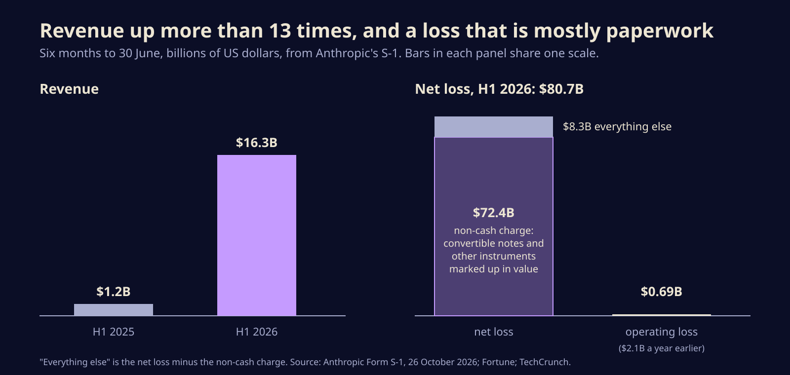
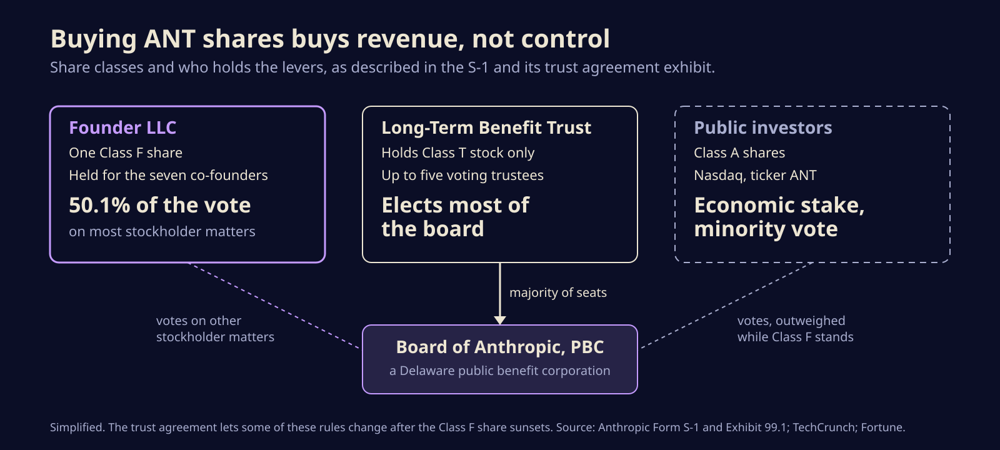

Anthropic's S-1: $16.3 billion in half-year sales, and the founders keep the wheel
Anthropic has filed to list on Nasdaq as ANT. Here is what the prospectus says about revenue, the $80.7 billion loss, who really controls the company, and what changes for anyone building on Claude.

Anthropic filed its registration statement with the SEC on Monday, October 26, and asked to list its Class A shares on the Nasdaq Global Select Market under the ticker ANT. After weeks of leaked drafts, the real numbers are now on the record: $16.3 billion of revenue in the first six months of 2026, up from about $1.2 billion a year earlier, and a net loss of $80.7 billion over the same stretch.
That second number is less frightening than it looks, and the first is less simple than it looks. For anyone who pays for Claude, ships products on its API or runs Claude Code all day, the filing is also the most detailed look yet at how the company behind those tools makes money, spends it, and who gets the final say.
A loss that is mostly an accounting entry
Of the $80.7 billion net loss, $72.4 billion is a non-cash charge. Anthropic raised a lot of money through convertible notes and similar instruments that turn into shares later. As the company's value climbed, the accounting value of those instruments rose too, and that increase lands on the income statement as a loss. No cash left the building.
The figure that tracks the actual business is the operating loss: $693 million for the half, down from $2.1 billion in the first half of 2025. Strip out stock-based pay and a few one-off items and the company reports $1.6 billion of adjusted operating income, a margin of roughly 10 percent, according to Fortune's reading of the filing. Full-year 2025 revenue was about $4.6 billion, so the first half of 2026 alone is more than three times all of last year.

None of this makes Anthropic a sure thing. The risk section is long, and the company says plainly it "may not achieve or sustain profitability in the future," as TechCrunch quoted. Growth this fast also makes every comparison look heroic, and the filing leaves the share count, price range and amount being raised blank for now.
Who actually holds the levers
The governance section is the part that sets this IPO apart. Public buyers get Class A shares. The seven co-founders, including Dario and Daniela Amodei, will hold a single Class F share through a company they form together, and that one share carries 50.1 percent of the vote on most stockholder matters.
Separately, the Long-Term Benefit Trust, set up in 2023, holds a special Class T stock that lets it elect a majority of the board. Its trust agreement, filed as an exhibit, allows up to five voting trustees; the signature pages name Ben Bernanke, Richard Fontaine and Neil Shah. Its stated job is to balance shareholder returns against the responsible development of advanced AI. Changing the trust needs 80 percent of its trustees and 80 percent of the board, with extra stockholder approvals that depend on whether the Class F share still exists.

Public investors are buying a share of the revenue, not a seat at the wheel.
Critics quoted by TechCrunch point out the obvious: voting power will not track economic ownership, so outside shareholders get little real say. Anthropic's answer is that this is the point. A safety mission that a single activist fund could vote away would not be much of a mission.
Where the money goes
Training and serving models is the bill that never stops. Reported totals for Anthropic's compute commitments vary a lot depending on what each outlet counts, from about $265 billion of purchase commitments on the balance sheet to more than $500 billion of planned spending over the next decade, so treat any single headline number with care. Most of it is spread across Amazon, Google, Microsoft and Broadcom hardware. The day after the filing, banks and Blackstone lined up $63 billion to buy Broadcom accelerators and networking gear through a special vehicle that will lease them to Anthropic.
On the customer side, more than 11,900 customers spend at least $100,000 a year, about 1,900 spend $1 million or more, and around 250 spend over $10 million. The top five customers produced roughly a quarter of revenue in the first nine months of 2026, which is the kind of concentration that keeps underwriters awake.
What it means if you build on Claude
A few lines in the filing matter more to developers than to fund managers.
- Account enforcement is getting stricter. The S-1 says some revenue has come from customers later found breaking its usage policy or commercial terms, and that tighter enforcement in August and September 2026 will shrink that share. If your access runs through a reseller, a shared seat or a gray-market key, assume it can vanish without notice and move to a direct plan or a cloud marketplace.
- Capacity should keep growing. Hundreds of billions in committed chips is a promise of more headroom on rate limits and new models. It also means pressure to keep prices high enough to pay for them.
- Expect quieter announcements. Companies in registration tend to say less in public until the shares trade. Fewer roadmap teasers for a few weeks is normal, not a signal.
- Read the risk factors yourself. They are the most candid document Anthropic has published about model misbehaviour, government disputes and customer concentration, and they are free on EDGAR.
The bigger picture
The listing could come as soon as mid to late November, and media reports put the target valuation between $1.5 trillion and $2 trillion, a number that appears nowhere in the filing. Whatever the price, this is the first time a frontier lab will report to public shareholders every quarter. The rest of the industry, OpenAI included, now has a template to beat or avoid, and the people who use these models will finally get audited numbers on what all that compute really costs.
Sources
- Anthropic, PBC, Form S-1 registration statement (SEC EDGAR)
- Anthropic, PBC, Exhibit 99.1, Long-Term Benefit Trust agreement (SEC EDGAR)
- Fortune, Anthropic's IPO prospectus shows $16.3 billion in revenue and an $80.7 billion net loss
- TechCrunch, Anthropic officially files for its public debut
- Fortune, Why investors will likely ignore the $81 billion hole
- Quartz, Broadcom arranged $63 billion in Wall Street financing for Anthropic's AI chips
Written with AI for Bade's Mod Shop. Facts are checked against the sources above on the day of publishing; if one is wrong, open an issue.